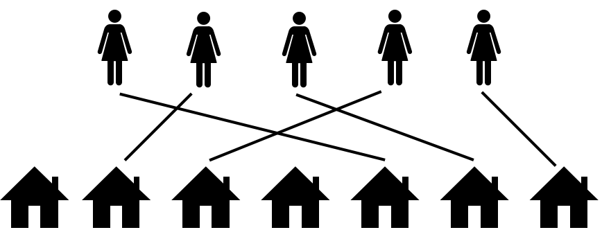

Jayakrishnan Madathil
I am a postdoctoral research associate in the School of Computing Science at the University of Glasgow, where I am part of the Beyond One Solution in Combinatorial Optimisation project led by Kitty Meeks. Before moving to Glasgow, I was a postdoc at the Chennai Mathematical Institute, and briefly an Early Career Fellow at IIT Gandhinagar. I did my PhD at The Institute of Mathematical Sciences (IMSc), Chennai.
I am a theoretical computer scientist, broadly interested in algorithms and complexity. I work primarily in parameterized complexity. A part of my current work deals with designing parameterized algorithms for counting problems. I also have an interest in problems at the intersection of economics and computation, specifically, fair allocation problems, mechanism design etc.
News and Updates
- I gave a talk on "Fair Division of a Graph into Compact Bundles" at the Joint Glasgow-Edinburgh Algorithms Workshop, June 2023.
- Serving as a thesis writing mentor during Jan-May 2023. You can read about University of Glasgow's thesis mentoring programme here.
Publications
Also availabe at dblp and Google Scholar.- with Neeldhara Misra and Aditi Sethia
- AAMAS 2023
The Complexity of Minimizing Envy in House Allocation (Extended Abstract)

We study almost-envy-freeness in house allocation, where we have to allocate m houses to n agents so that each agent receives exactly one house. While we can check in polynomial time if an envy-free allocation exists, that is not the case with relaxations of envy-freeness. In addition, typical relaxations of envy-freeness such as envy-free up to some goods do not make sense for house allocation problems as every agent is required to receive exactly one house. Hence we quantify the envy caused by an allocation using three different metrics---the number of envious agents, the maximum envy experienced by an agent and the total envy experienced by all the agents, and study the complexities of the corresponding computational problems where we are looking for an allocation that minimizes one of the three metrics.
- Further Exploiting c-Closure for FPT Algorithms and Kernels for Domination Problems
- with Lawqueen Kanesh, Sanjukta Roy, Abhishek Sahu and Saket Saurabh
- STACS 2022
- A Polynomial Kernel for Bipartite Permutation Vertex Deletion.
- with Jan Derbisz, Lawqueen Kanesh, Abhishek Sahu, Saket Saurabh and Shaily Verma
- IPEC 2021
- Algorithmica, 2022
- Odd Cycle Transversal in Mixed Graphs
- with Avinandan Das, Lawqueen Kanesh and Saket Saurabh
- WG 2021
- On the Complexity of Singly Connected Vertex Deletion
- with Avinandan Das, Lawqueen Kanesh, Komal Muluk, Nidhi Purohit and Saket Saurabh
- IWOCA 2020
- Theoretical Computer Science, 2022
- A Sub-Exponential FPT Algorithm and a Polynomial Kernel for Minimum Directed Bisection on Semicomplete Digraphs
- with Roohani Sharma and Meirav Zehavi
- MFCS 2019
- Algorithmica, 2021
- Parameterized Complexity Classification of Deletion to List Matrix-Partition for Low-Order Matrices
- with Akanksha Agrawal, Sudeshna Kolay and Saket Saurabh
- ISAAC 2019
- On the Complexity of Mixed Dominating Set
- with Fahad Panolan, Abhishek Sahu and Saket Saurabh
- CSR 2019
- Connecting the Dots (with Minimum Crossings)
- with Akanksha Agrawal, Grzegorz Guspiel, Saket Saurabh and Meirav Zehavi
- SoCG 2019
- An Erdős-Pósa Theorem on Neighborhoods and Domination Number
- with Pranabendu Misra and Saket Saurabh
- COCOON 2019
- Max-Cut Above Spanning Tree is Fixed-Parameter Tractable
- with Saket Saurabh and Meirav Zehavi
- CSR 2018 (Best Paper Award)
- Theory of Computing Systems, 2020 (retitled: Fixed-Parameter Tractable Algorithm and Polynomial Kernel for Max-Cut Above Spanning Tree)
- Mixed Dominating Set: A Parameterized Perspective
- with Pallavi Jain, Fahad Panolan and Abhishek Sahu
- WG 2017
Contact
You can reach me via email: firstname [dot] lastname [at] glasgow [dot] ac [dot] uk